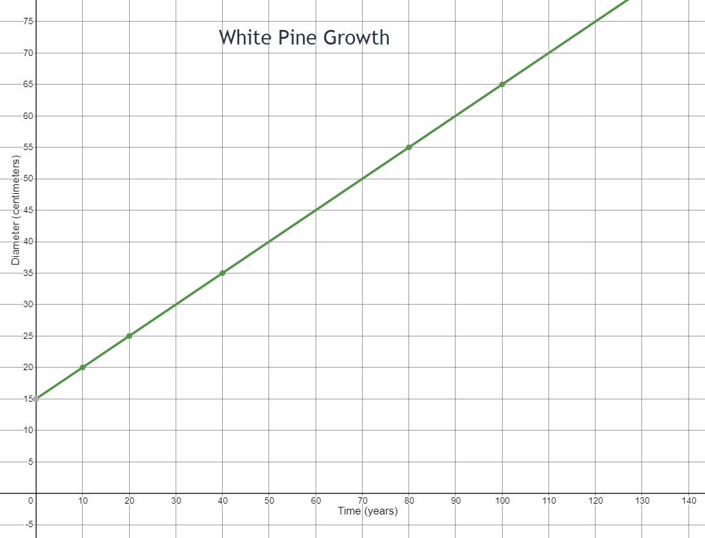
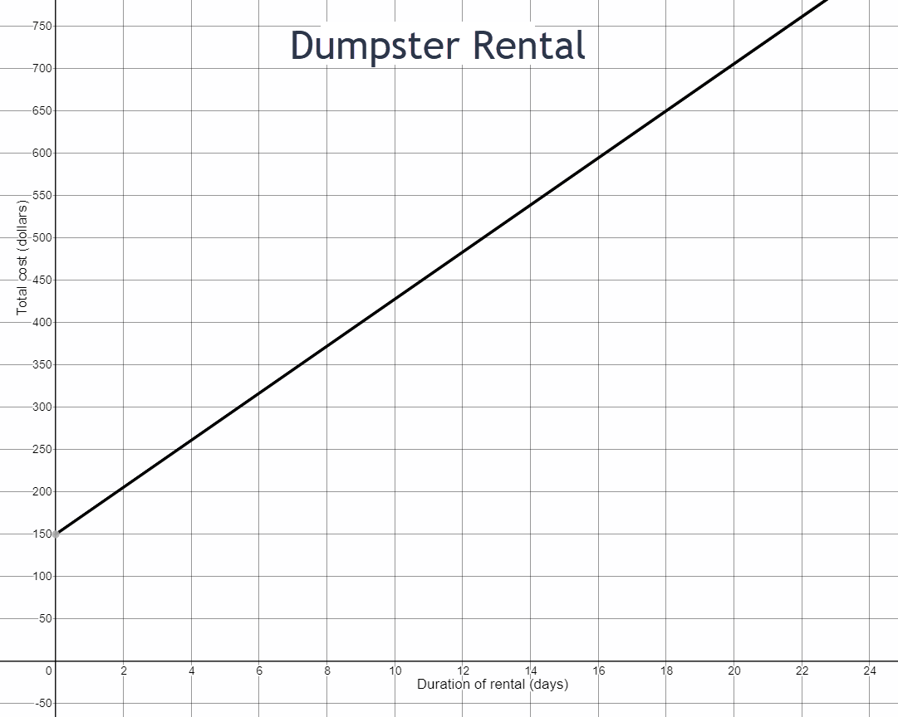
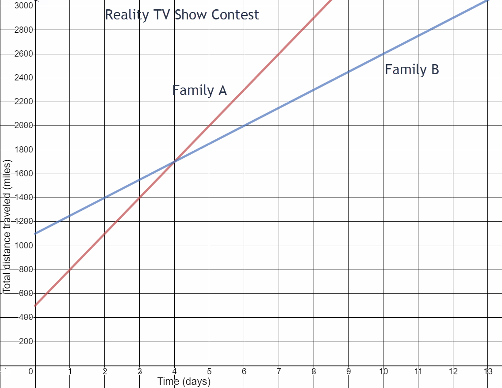
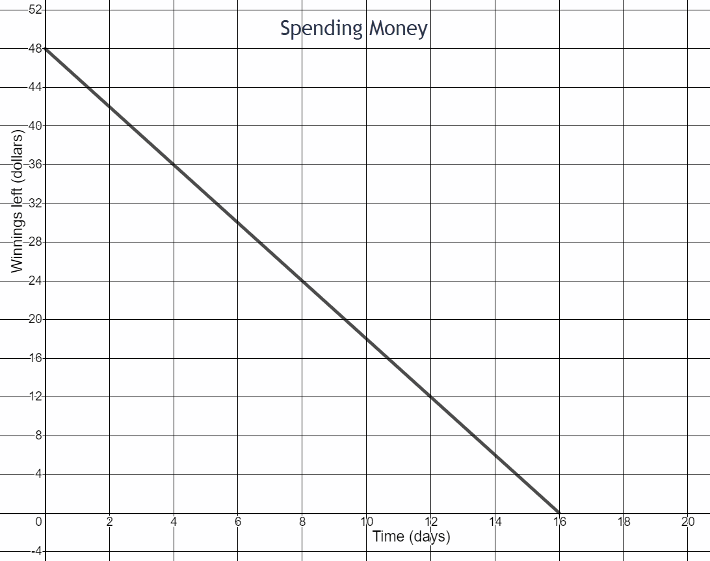
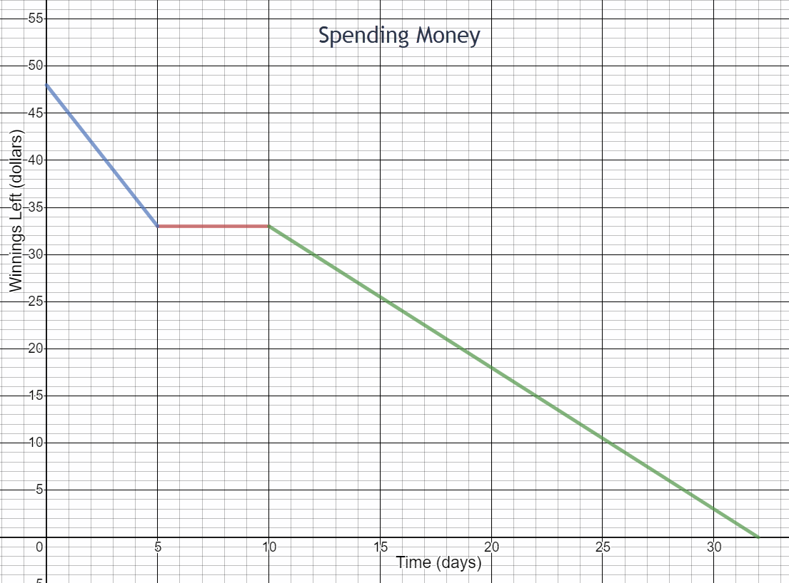

Linear Modeling and Logic Unit
4.1 Rate of Change
-

- What is the total cost for 60 pounds of dumbbells ordered? Write this as an ordered pair.
- What is the total cost for 160 pounds of dumbbells ordered? Write this as an ordered pair.
- How much more does it cost for 160 pounds of dumbbells compared to 60 pounds? Write this rate of change in fraction form.
- How much more do you pay for each additional pound ordered?
- What is the initial cost of ordering dumbbells? (Look at the y-intercept where dumbbells ordered is 0 pounds.) What might this initial cost represent?
(60,45)
(160,105)
\(\begin{equation} \frac{105-45}{160-60}=\frac{\$60}{100 \text{ lbs}}=\frac{\$3}{5 \text{ lbs}} \end{equation}\)
$.60
$9 Could be the cost of shipping or processing fee or the cost of a weight bar.
\begin{equation}\text{slope} =\frac{\text { vertical change }}{\text { horizontal change }} \end{equation}
-

Write the ordered pair for each point on the graph.
- Point A
- Point B
- Point C
- Point D
- Point E
- Point F
- Draw a line passing through points D and F
- Name the y-intercept of this line.
- Name the x-intercept of this line.
(5,2)
(6,-4)
(-7,5)
(-4,0)
(10,-2)
(0,-1)

Point F (0,-1)
Point D (-4,0)
-

- Consider the Highway Construction Project graph. How many miles had been completed at the beginning of the project? Write this as an ordered pair.
- How many miles of highway were completed in 100 days? Write this as an ordered pair.
- What is the change in highway miles for each 100 days on the project? Write this rate of change as a fraction.
- How many miles were completed in 5 days?
- How many miles were completed in 1 day?
- How many miles were completed in 300 days? Write this as an ordered pair.
- How much time did it take to complete 200 miles of highway? Write this as an ordered pair.
- How many highway miles were completed between day 300 and day 1000 of the project?
- What is the change in highway miles for each 700 days on the project? Write this rate of change as a fraction. Reduce your fraction.
zero miles (0,0)
20 miles (100,20)
\(\begin{equation}\frac{20\text{ miles}}{100\text{ days}}\end{equation}\)
1 miles
0.2 miles
60 miles (300,60)
200 miles (1000,200)
140 miles
\(\begin{equation}\frac{140}{700}=\frac{1}{5}\text{ miles per day}\end{equation}\)
-

- How much in royalties does the author receive for selling 0 books?
- How much in royalties does the author receive for selling 250 books?
- What is the rate of change in royalties for every 250 books sold? Write this rate of change as a fraction.
- How much does the author receive in royalties for each book sold?
$0
$300
\(\begin{equation} \frac{\$300}{250 \text{ books}} \end{equation}\)
$6 for 5 books which is $1.20 per book

- Write the ordered pairs for two points on the line.
- Find the change in diameter between your two points.
- Find the change in time between your two points.
- Write the rate of change in centimeters per year as a fraction.
- What was the initial diameter of the tree?
- How fast did the tree grow?
(40,35) (100,65) for example
\(\begin{equation}65-35=30\end{equation}\)
\(\begin{equation}100-40-60\end{equation}\)
\(\begin{equation}\frac{30\text{ cm}}{60\text{ years}}\end{equation}\)
15 cm
\(\begin{equation}\frac{1}{2}\text{ cm per year}\end{equation}\)

- What is the initial cost of the dumpster rental? Write this as an ordered pair.
- What is the total cost of the dumpster rental for 20 days? Write this as an ordered pair.
- Consider your two ordered pairs from parts a and b. What is the vertical change between these two points on the graph?
- What is the horizontal change between these two points on the graph?
- Write the rate of change as a fraction using your answers to parts c and d.
- Interpret this rate of change in context of the problem situation. Write a complete sentence.
(0,150)
(20,700)
\(\begin{equation}700-150=\$550\end{equation}\)
\(\begin{equation}20-0=20\text{ days}\end{equation}\)
\(\begin{equation}\frac{\$550}{20\text{ days}}\end{equation}\)
The cost of renting a dumpstser is $27.50 per day.
Two families are competing on a reality TV show. The goal of the show is to race from Los Angeles to New York. Each family is taking an indirect route and has different tasks to complete along the way. The family that completes the race in the least amount of time wins.>

- How many miles did Family A complete in the race before now?
- How many miles did Family B complete in the race before now?
- What is Family A’s speed?
- What is Family B’s speed?
- Who appears to be winning the race?
500 miles
1100 miles
\(\begin{equation}\text{ Family A: }\frac{2000-500}{5-0}=300\end{equation}\)
300 miles per day
\(\begin{equation}\text{ Family B: }\frac{2000-1100}{6-0}=150\end{equation}\)
150 miles per day
Family A
You won a Ping Pong tournament. Now you are monitoring your spending.
- How much money did you win in the tournament?
- Write the ordered pairs for two points on this line.
- Write the slope of the line as a fraction. What part of the fraction indicates that the line in the graph is decreasing?
- Interpret the slope in the context of the scenario. Write a complete sentence.
$48
(0,48) and (16,0)
\(\begin{equation}\frac{-48}{16}=\frac{-3}{1}\end{equation}\)
The negative sign indicates the line is decreasing.
You spend $3 per day.
Here’s a different scenario for monitoring your spending after winning the Ping Pong tournament.
- How much did you spend in the first five days after the tournament?
- How much did you spend per day in the first five days after the tournament?
- What does the segment between 5 and 10 days represent?
- How much did you spend between day 10 and day 32? What is the rate of change for this time period?
- When did you spend money at the fastest rate according to this graph?
\(\begin{equation}48-33=\$15\end{equation}\)
$3 per day
You did not spend any money.
\(\begin{equation}\frac{\$33}{22\text{ days}}=\$1.50\text{ per day}\end{equation}\)
Days 1 through 5